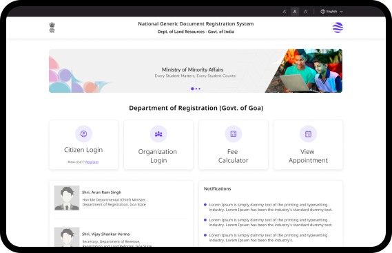
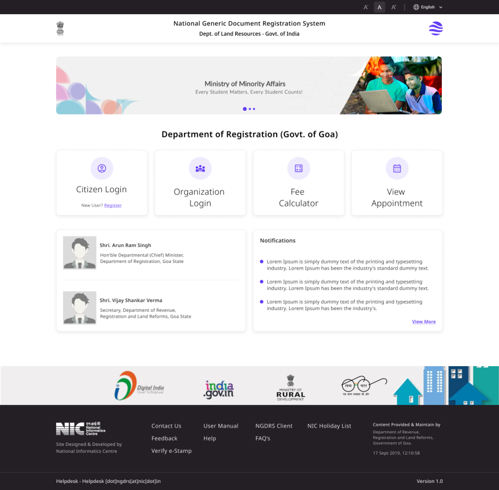

Exploration
Wireframes
Early wireframes explored multiple layout directions focused on clarity and structure.
Option 1

Option 2 - Selected

The NGDRS platform enables property registration workflows. Users struggled with unclear CTAs and poor information hierarchy—making it hard to identify key actions and initiate tasks.

Critical usability gaps that created confusion, increased effort, and reduced task clarity for users.
Primary actions were not clearly distinguishable
Poor visual hierarchy created confusion
Interface felt cluttered and overwhelming
Users required extra effort to find relevant actions
The existing interface presented multiple actions without prioritization, leaving users unsure where to begin.
The redesign focused on simplifying decision-making and guiding users toward primary actions.
Early wireframes explored multiple layout directions focused on clarity and structure.
The final design delivers a structured and intuitive experience with clear primary CTAs, improved spacing, and a guided user journey.

Improved discoverability of key actions
Reduced confusion at the entry point
Faster task initiation for all users
Better usability feedback from stakeholders
This project highlighted the importance of simplicity and clarity in complex systems. Small CTA improvements can create large usability gains.